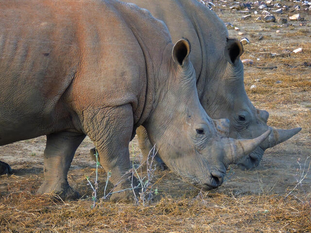
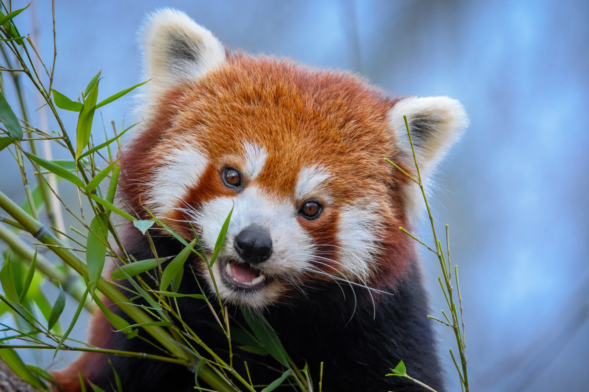
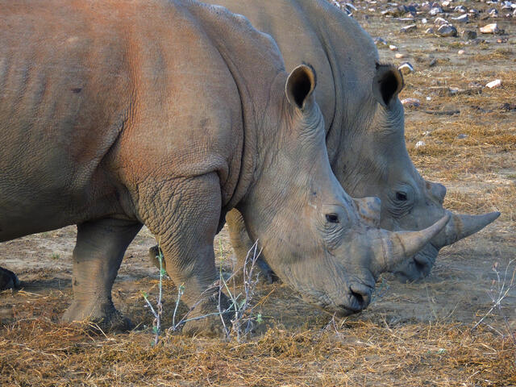
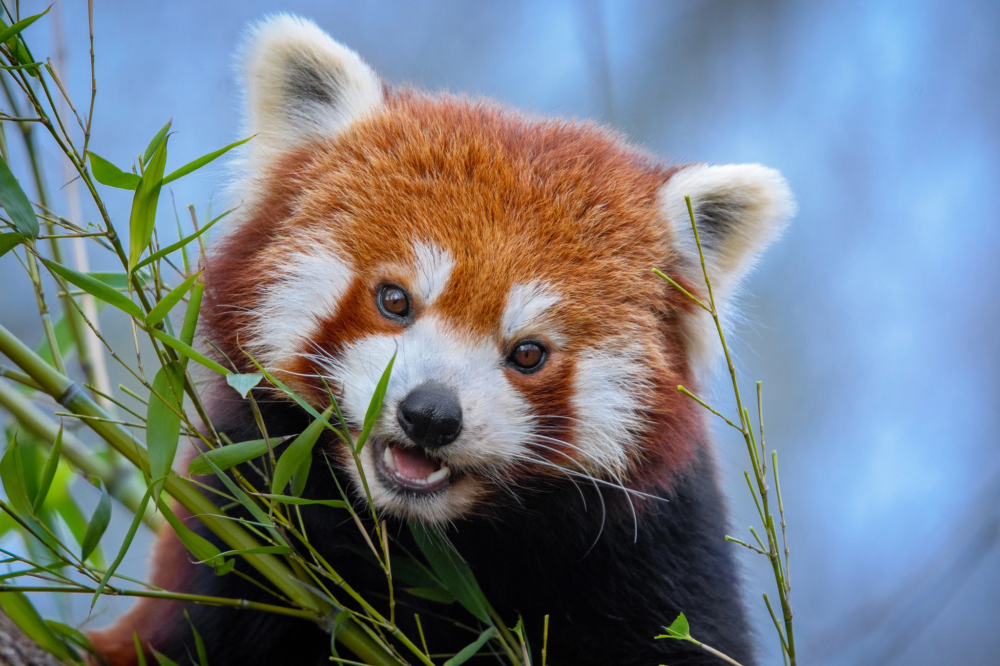

Help To protect Our Wold Life
Protected areas or conservation areas are locations which receive protection because of their recognized natural, ecological or cultural values. There are several kinds of protected areas, which vary by level of protection depending on the enabling laws of each country or the regulations of the international organizations involved. Protected areas are implemented for biodiversity conservation, often providing habitat and protection from hunting for threatened and endangered species. Protection helps maintain ecological processes that cannot survive in most intensely managed landscapes and seascapes. Wildlife conservation is the practice of protecting plant and animal species and their habitats. As part of the world’s ecosystems, wildlife provides balance and stability to nature’s processes. The goal of wildlife conservation is to ensure the survival of these species, and to educate people on living sustainably with other species. The human population has grown exponentially over the past 200 years, to more than seven billion people today, and it continues to rapidly grow. This means natural resources are being consumed faster than ever by the billions of people on the planet. This means natural resources are being consumed faster than ever by the billions of people on the planet. This growth and development also endangers the habitats and existence of various types of wildlife around the world, particularly animals and plants that may be displaced for land development, or used for food or other human purposes. Other threats to wildlife include the introduction of invasive species from other parts of the world, climate change, pollution, hunting, fishing, and poaching. National and international organizations like the World Wildlife Fund, Conservation International, the Wildlife Conservation Society, and the United Nations work to support global animal and habitat conservation efforts on many different fronts.
For More information click on the photos to learn more about them:
 



Links to similar sites:
© Copyright MD RAKIB - Protect Wild Life - COMP-213 - Fall 2022
References: Google image ICUN Animal fact guide 10 years of Helping Rhino Treehugger Goverment of Canada